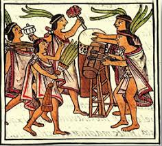

Historia de la Musica Mexicana

Raices Prehispanicas
- Las culturas mesoamericanas usaban la musica en rituales religiosos, ceremonias y celebraciones.
- Instrumentos tipicos: huehuetl, flautas de carrizo, sonajas, caracoles marinos.
- Los cantos tenian caracter narrativo y espiritual, relatando mitos y leyendas.
Influencia Espanola y Mestizaje
- Con la llegada de los espanoles en el siglo XVI, se introdujeron instrumentos europeos como la guitarra, el violin y la vihuela.
- Surgieron generos mestizos como el son jarocho, el huapango y el son huasteco.
Musica Sacra en la Colonia
- Durante la epoca colonial, florecio la musica religiosa en iglesias y catedrales.
- Se formaron coros y orquestas que interpretaban obras europeas fusionadas con elementos indigenas.
Siglo XIX: Nacionalismo y Romanticismo
- El vals se popularizo entre todas las clases sociales mexicanas.
- Compositores como Juventino Rosas marcaron esta epoca con obras romanticas y nacionalistas.
Siglo XX: Epoca de Oro y Mariachi
- El mariachi, originario de Jalisco, se convirtio en simbolo nacional y fue reconocido por la UNESCO.
- La musica ranchera, los boleros y las canciones romanticas dominaron el cine mexicano.
- Figuras como Pedro Infante, Jorge Negrete y Lola Beltran fueron iconos de esta etapa.
Musica Contemporanea
- Hoy en dia, Mexico es cuna de generos como el pop latino, el rock en espanol, el regueton y el indie.
- Artistas como Luis Miguel, Cafe Tacvba, Natalia Lafourcade y Peso Pluma reflejan la diversidad actual.